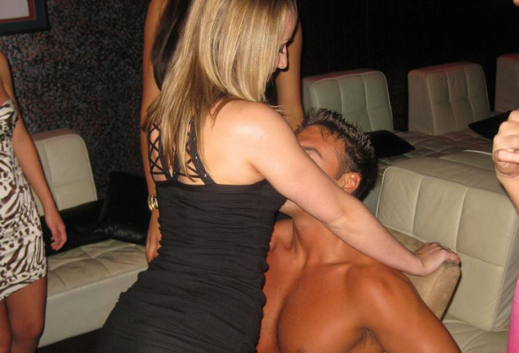

IOP is a beach town first: one Front Beach strip, a marina, and a lot of big rental houses. Here's what's realistically on offer for a bachelorette or birthday weekend on the island, from the Front Beach bars to the closest clubs and private dancers.
Prefer the show at your rental? Call or text and we'll tell you if the date is free.
Call or Text
There's nothing like a male revue on the island, and nothing permanent in Charleston either. Shows such as Magic Men Live and iCandy Male Revue tour through the region a few times a year, and HonkyTonk Saloon in Ladson, about 40 minutes off the island, books the odd revue night. With the Connector between you and all of it, most rental groups bring the entertainment to the house instead.
Michael At Your Place handles a lot of island rentals. He's Charleston-based, and a show is $200 for up to 90 minutes, paid on arrival by cash, Venmo, or Cash App. He covers Charleston, Mount Pleasant, Folly Beach, and Isle of Palms, works brunch or late night, and takes last-minute dates.
IOP has no strip clubs. Downtown's King Street Cabaret, Secrets Cabaret, and Thee Southern Belle are roughly 30 minutes away over the Ravenel Bridge, and North Charleston's G Club Gentlemen's Club and Gen X Cabaret are a similar drive up I-526. Mixed groups who'd rather stay put can have a female dancer come to the house through local entertainment services.
The Windjammer is the island's landmark bar, with live music and the ocean right there, and The Dinghy around the corner has a big patio and later hours. For a sit-down dinner with drinks, Islander 71 Fish House overlooks the marina, while Smuggler's Island Eats & Rum Shack keeps things barefoot-casual. Doing dinner on the mainland one night? Here's Shem Creek and Mount Pleasant nightlife, and if the group is splitting the trip with another beach, see Folly Beach after dark.